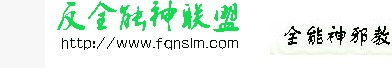
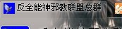
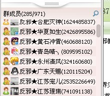
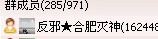

Conversation with 81184027 at Fri 22 Nov 2013 09:38:41 AM CST on 154115835 (webqq)
(10:19:53 AM) 3972690776: 请问各位哥哥姐姐，有谁知道过关于全能神的这样一种组织
(10:30:13 AM) 光: 嗯
(10:30:38 AM) 光: http://angelife.github.io/%E4%B8%9C%E6%96%B9%E9%97%AA%E7%94%B5%E9%80%80%E6%95%99%E5%8F%82%E8%80%83%E6%89%8B%E5%86%8C.html
(10:31:12 AM) 光: 其实本来叫做东方闪电
(10:31:15 AM) 发送失败,错误号:108:
其实本来叫做东方闪电
(10:32:13 AM) 3972690776: 我家人现在有人相信了，我想知道我怎么样才能挽救她们
(10:32:40 AM) 、淺笑: :!
(10:33:10 AM) 3972690776: 请你们给我一点建议
(10:32:51 AM) 光: 東方閃電的真正创始人为黑龙江阿城永源镇物理教师赵维山，1989年在河南省清丰县时 改信“常受主”，被封为“能力主”。1991年永源教会被公安取缔，赵维山逃到河南。1993年，他在河南汝阳推崇一名高考落榜后精神分裂的山西大同女子 “全能”杨向彬为神，“女基督”，讲解异象，只有数名女子可以接近她，记录“基督”所说的话。赵维山自己则被教眾称为大祭司“全权”，负责组织行政。 2000年9月6日，赵维山携杨向彬前往美国寻求政治避难，公开了自己东方闪电发起人的身份。 1990年代，该教派在河南省建立，发展迅速，传入黑龙江、山东、安徽等地，2004年，该教派已经传入内蒙古、山西、新疆、宁夏、甘肃等地方。[10]。 2012年，東方閃電以「全能神教會」的名稱活躍於中國大陸[11][12][13][14][15]、香港、台灣等地區。該教派在香港葵青、屯門、元朗、太和、上水、彩虹)等地[16][17]；台灣桃園、中壢、三峽、台北，以及全島其他地區都有其传播[18][15]。2012年底，據大陸媒體報導，眾多全能神教會人員因懼怕世界末日自殺。 該教派的传教目標主要是針對天主教會與基督新教會的平信徒和聖職人員[19]，婦女亦是传教對象之一[16][20]。有傳道人被該教派成功吸收[18][21]，該教派也曾誘騙並囚禁牧師[22]。該教派的人員偽裝成「望教友」或「慕道友」，進行滲透教會和教區，包括參加其他教會的查經班、小組聚會、吃飯、加入基督教機構、入讀神學院[21]等。會發送宣傳單張、宗教手冊，內容多與末世有關[17]。透過溫情攻勢進行探訪、電話關懷，對於被滲透的教會採取挑撥利誘、分化離間等製造嫌隙的手段[22]，以及偽造神蹟欺騙信徒[19]。若有不從，則會有踰越道德底線之事[18]，包括言語恐嚇[23]、色誘、下迷藥、囚禁[19]、暴力傷害、殺害等。 據多份報章報導，該教派利用改了歌詞的流行歌曲（其中包括了台灣偶像團體S.H.E的《Super Star》一曲等）作為對信徒「洗腦」的媒介。
(10:33:34 AM) 光: http://51qiangda.com/forms/4f277c95b3e57c3faa00002f
(10:33:46 AM) 光: 可以先填一下咨询登记表
(10:34:05 AM) 光: 填写的过程中，你也可以整理一下自己的思路
(10:37:23 AM) 光: 永源镇物理教师赵维山？又乱写了
(10:37:36 AM) 光: 赵维山就是一个木匠
(10:37:42 AM) 光: 怎么成物理老师了
(10:37:47 AM) 光: 又有人乱改
(10:42:34 AM) Gi Gi: 哎。
(10:53:34 AM) 、淺笑: 打酱油 打酱油
(11:40:07 AM) 渊泽雨: 全国全能神受害者签名征集
http://www.fqnslm.com/bbs/dispbbs.asp?ID=525
如果你真心反全能神，请留下你的一句话……
(11:40:48 AM) 光: 你那个是假的
(11:41:01 AM) 光: 平台是假的
(11:41:59 AM) 光: 渊泽雨
(11:42:23 AM) 光: 不要病急乱投医
(11:43:13 AM) 渊泽雨: 不是假的
(11:42:55 AM) 光: 你怎么判断不是假的呢
(11:43:43 AM) 渊泽雨: 你怎么判断是假的
(11:43:25 AM) 光: 因为这个是我09年创建的
(11:43:32 AM) 光: 后来我离开了
(11:44:15 AM) 渊泽雨: 这个？
(11:43:50 AM) 光: 嗯
(11:44:03 AM) 光: 以前叫做反邪全能神联盟
(11:44:14 AM) 光: 改了一个字
(11:45:15 AM) 渊泽雨: 现在有人 在经营
(11:45:26 AM) 渊泽雨: 
(11:45:01 AM) 光: 说来话长了
(11:45:36 AM) 渊泽雨: 
(11:45:16 AM) 光: 我已经懒得管他们了
(11:46:04 AM) 渊泽雨: 是这个
(11:46:06 AM) 渊泽雨: 在经营
(11:45:51 AM) 光: 都是抄袭的
(11:46:35 AM) 渊泽雨: 额...
(11:46:06 AM) 光: 还有造假
(11:46:18 AM) 光: 一人多帐号
(11:46:43 AM) 光: 甚至可能有邪教和黑社会背景
(11:47:17 AM) 渊泽雨: 那群也不错 还有那网站 也不错啊 上面有很多 值得一看的办法
(11:46:57 AM) 光: 假的
(11:47:11 AM) 光: :face14:
(11:48:01 AM) 渊泽雨: 假的 ？ 那他们的企图使什么
(11:47:35 AM) 光: 这边以前的群聊天记录
(11:47:41 AM) 光: 都有实例证明
(11:47:47 AM) 光: 我在linux下
(11:48:16 AM) 光: 你贴的这些人里面
(11:48:21 AM) 光: 灭神
(11:48:26 AM) 光: 清风
(11:48:29 AM) 光: 天赐
(11:48:33 AM) 光: 宠儿
(11:48:45 AM) 光: 这些都打过交道
(11:48:48 AM) 光: 不是正经人
(11:49:37 AM) 渊泽雨: 他们不是反邪的？
(11:49:16 AM) 光: 本身就很邪
(11:49:19 AM) 光: 反什么邪呢
(11:50:06 AM) 渊泽雨: ....
(11:49:56 AM) 光: 你在里面慢慢观察吧
(11:50:30 AM) 渊泽雨: 额
(11:50:49 AM) 渊泽雨: 那我现在只有等是吗
(11:50:32 AM) 光: 可以读读书
(11:50:55 AM) 光: 把自己能做的事情做好
(11:51:31 AM) 渊泽雨: 恩
(11:52:01 AM) 渊泽雨: 灭神 是个怎么样的人
(11:52:02 AM) 光: 全国全能神受害者签名征集
http://www.fqnslm.com/bbs/dispbbs.asp?ID=525
(11:52:14 AM) 光: 这就是他们营销的手段
(11:53:05 AM) 渊泽雨: 额
(11:52:48 AM) 光: 你们不就是这样被吸引过去的么
(11:53:34 AM) 渊泽雨: 那我们只有等待吗
(11:53:47 AM) 渊泽雨: 我先下了 下午再聊吧
(11:53:22 AM) 光: 嗯
(01:21:14 PM) 光: 现在的 年轻人，条件很好，机遇也不差。这个机遇就是大部分人不读书、不用功，上个网、看个电影啊，就跟我们＂文革＂时一样，大部分人不读书或想读也读不了。现在 包括学习很好的学生，用功程度也远不如过去，所以你只要花费很少的精力就能超越别人。还是和＂文革＂时一样，并不是你有多聪明，但你读书了就可以考上大 学。＂文革＂给我的启发之一就是，任何时候不要随大流，毛主席时期如此，现在也如此。——冯象
(02:00:37 PM) 喂 诺货祢是肿麽勒: 大学校园爆笑街采 关于“打飞机”的一切
(02:00:37 PM) 喂 诺货祢是肿麽勒: http://v.qq.com/cover/5/58uo6ctkmw484j7.html?vid=i0116d29seq&__t=1&ptag=1.qq&_out=9
(03:38:58 PM) The account has disconnected and you are no longer in this chat. You will automatically rejoin the chat when the account reconnects.